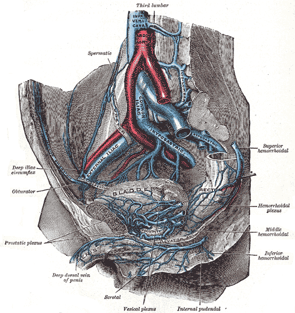

Muitos simetrizam a drenagem venosa ovariana — esquerda e direita iguais.
Não são. A banca gosta porque os lados são diferentes.
ObstetríciaParte B · VasosItens 078–082Erro comum
Tópico 1
A veia ovárica não é simétrica
Além da artéria ovárica (aorta), a veia ovárica tem detalhe assimétrico cobrado em prova. Conceito objetivo e curto: não simetrizar a drenagem venosa ovariana.
Tópico 2
Esquerda → renal esquerda
A veia ovárica esquerda drena para a veia renal esquerda.
Tópico 3
Direita → cava
A veia ovárica direita drena para a veia cava (inferior).
Assimetria a anotar:
esquerda → veia renal esquerda
direita → veia cava
Veias ováricas — lados diferentesIlustração autoral da página; complementa o texto soberano.Esquema autoral

Sistema venoso pélvico (prancha Gray 585)
Atlas venoso: IVC e sistema pélvico — base da assimetria das ováricas.
Plate 585 from Gray's Anatomy (20th ed., 1918), by Henry Vandyke Carter. Public domain. Source: https://commons.wikimedia.org/wiki/File:Gray585.png
Quiz — fixação
Veia ovárica esquerda drena para:
Gabarito B.A veia ovárica esquerda drena para a veia renal esquerda.
(A)esse é o padrão da direita, não da esquerda — é o erro de simetrização.
(C)ilíaca interna é artéria, não veia.
(D)ováricas esquerda e direita não drenam uma na outra.
Por que cair em A:“cava é o destino final” — vale para a direita, não para a esquerda.